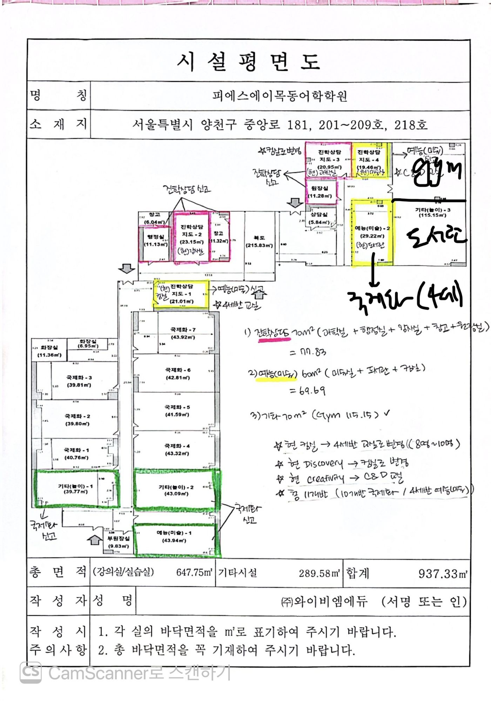

한 줄 요약
"짐을 나눈다"의 짐 = 체육실(Gym, 115㎡)이에요.
체육실 가운데를 폴딩도어로 나눠 한쪽을 도서관으로 쓰고,
지금 도서관 방을 4세반 교실로 바꾸라는 지시예요.
1이 도면은 뭔가요?
교육청에 학원 등록을 바꿀 때 내는 「시설평면도」예요.

본사 메모가 적힌 시설평면도 · 총 937.33㎡ (강의실 647.75 + 기타시설 289.58)
영어유치원은 법적으로 '학원'이라서, 방마다 서류상 용도를 신고해요. 국제화, 예능(미술), 기타(놀이), 진학상담 같은 이름이 그 용도예요.
그래서 서류상 이름과 실제로 쓰는 용도가 달라요. 예를 들어 서류에는 「진학상담지도-1」인데 실제로는 컴퓨터실이에요. 도면에 손글씨로 적힌 "(현)○○"이 실제 용도예요.
2형광펜 색깔의 의미
용도마다 정해진 최소 면적이 있어서, 작은 방들을 묶어 기준을 맞춘 거예요. 합계는 직접 다시 계산해서 확인했어요.
| 신고 용도 | 묶인 방 (실제 용도) | 합계 |
|---|
| 분홍 · 진학상담 | 과학실 20.95 + 행정실 11.13 + 강사실 23.15 + 창고 11.32 + 원장실 11.28 | 77.83㎡
70㎡ 이상 ✓ |
| 노랑 · 예능(미술) | 미술실 19.46 + 도서관 29.22 + 컴퓨터실 21.01 | 69.69㎡
60㎡ 이상 ✓ |
| 기타(놀이) | 체육실(Gym) | 115.15㎡
70㎡ 이상 ✓ |
| 초록 · 국제화로 변경 | 기타(놀이)-1 39.77 · 기타(놀이)-2 43.09 · 예능(미술)-1 43.94 | 일반반
교실로 |
3방이 이렇게 바뀌어요
왼쪽이 지금, 오른쪽이 바뀐 뒤의 모습이에요.
컴퓨터실진학상담지도-1 · 21㎡ · 입구 쪽
→
4세반 교실8~10명 · 예능(미술)로 신고
Discovery (과학실)진학상담지도-3 · 21㎡
→
컴퓨터실
Creativity (미술실)진학상담지도-4 · 19㎡
→
C&D 교실Creativity + Discovery 통합
놀이실 2개 · 미술실 1개초록 형광펜 방
→
국제화 교실
11총 반 수
10국제화반
14세반 (예능 신고)
4'짐 나누기'는 이렇게 해요
도면 오른쪽 위에 큰 검정 펜으로 추가된 안이에요.
Gym (체육실)위쪽 공간 · 그대로 체육실
도서관아래쪽 공간 · 도서관이 이쪽으로 이사
빨간 점선 = 폴딩도어 자리 (도면의 검정 가로선)
① 체육실(115㎡) 가운데에 폴딩도어를 달아 위는 Gym, 아래는 도서관으로 써요.
② 비게 된 지금의 도서관 방(예능(미술)-2, 29㎡)은 4세반 교실(국제화)로 바꿔요.
③ 결과적으로 4세반 교실이 하나 더 생겨요.
왜 하필 폴딩도어일까요?
🧱 고정 벽을 세우면내부 구조(구획)가 바뀐 걸로 봐요.
→ 소방시설 완비증명을 다시 받아야 해요 (점검·비용·시간).
🚪 폴딩도어를 달면열고 닫는 칸막이라 '가구 배치'에 가까워요.
→ 본사 설명으로는 완비증명을 다시 안 받아도 돼요.
비유하면, 거실에 벽을 새로 쌓는 건 '집 공사'이고 접이식 파티션을 세우는 건 '인테리어'로 보는 논리예요.
5원장님이 꼭 확인할 것
- 양천소방서 예방과에 직접 확인"체육실에 폴딩도어 설치하면 완비증명 재발급이 필요한지" — 최종 판단은 본사가 아니라 소방서가 해요.
- 나눈 뒤에도 '기타(놀이) 70㎡' 기준을 채우는지서류상 체육실을 115㎡ 전체로 계속 신고하는지, Gym 부분만 신고하는지 본사에 확인하세요.
- 폴딩도어를 닫았을 때 양쪽 소방설비스프링클러·화재감지기·비상조명이 도서관 쪽과 Gym 쪽에 각각 있는지 봐야 해요.
- 피난 동선폴딩도어를 닫아도 도서관 쪽 출입문·대피로가 막히지 않아야 해요.
- 교육청 학원 변경등록 일정이 도면이 그 서류예요. 강서양천교육지원청 접수 시기와 개강 일정을 맞춰 두세요.
⚠️ 주의 — 폴딩도어 해석은 본사 설명을 옮긴 거예요. 소방서·교육청 기준은 관할마다 다를 수 있으니 공사 전에 꼭 확인하세요.
📞 소방서에 물어볼 때 이렇게 말하면 돼요
"양천구 중앙로 181 2층 영어학원인데요, 체육실 115㎡ 가운데에 폴딩도어(접이식 칸막이)를 설치해서 반은 도서관으로 쓰려고 합니다. 이 경우 내부구획 변경으로 보아 안전시설 완비증명을 다시 받아야 하나요?"